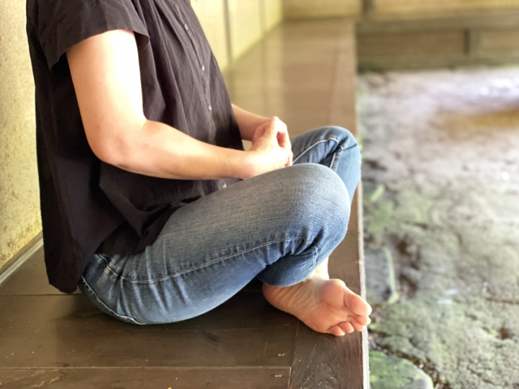

座禅とは姿勢を正して座り、精神を統一させることで自分と向き合うという仏教の修行です。
禅は世界中の大企業の成功者、トップアスリートたちが取り入れているマインドフルネスの元祖です。
座禅を行い、日常から自分を切り離す時間を作りましょう。そのような時間は頭や心をリセットさせてくれるでしょう。
座禅の効果
1.心が落ち着きます。気持ちをすっきりと切り替えることができたり、日々の仕事の緊張を解いてリラックスする時間になります。
2.姿勢が正しくなります。座禅は姿勢を正し行うので良い姿勢に整えられます。内臓の調子などもよくなるでしょう。
3.集中力が高まります。精神統一を行う事で間隔が研ぎ澄まされ集中力が向上するでしょう。
座禅は腹式呼吸で行います。腹式呼吸を一定のリズムで続けると脳内物質のセロトニンの分泌が増えると言われています。そのため精神安定効果は非常に高いでしょう。
座禅の始まり
座禅は釈迦の修行から始まったと伝えられています。およそ2500年前、紀元前400年頃、釈迦がブッダガヤの菩提樹の下で坐禅を組み、悟りを開きました。
座禅が広まったのは、釈迦から数えて28代目の弟子にあたる達磨大師という僧侶が6世紀頃中国にわたり禅宗を伝えたことがきっかけです。
その後中国内で、臨済宗、曹洞宗、黄檗宗という3宗派が誕生
これらの宗派は後に日本にも伝わり、「日本三禅宗」と呼ばれる存在になりました。臨済宗、曹洞宗、黄檗宗では、現在でも座禅の修行をおこなっています。
座禅のやり方
まずは座るための座布団を用意しましょう。自宅にあるもので問題ありません。座布団無しで椅子の上で行う事が出来ます。椅子で行う場合は椅子に深く腰掛け手順3から行ってください。
座禅で大切なのは姿勢と呼吸です。まずはこの２つを押さえておきましょう。
座禅アプリを使うことで呼吸のタイミングを学ぶことができます。
座禅は宗派によって座り方が違ったりします。ここでの紹介はあくまで座禅の一例ですので、作法はお好きなものに合わせてください。
姿勢を整える
1.2つに折りたたんだ座布団をお尻にしき胡坐をかきます。軽くストレッチをしてから臨みましょう。
2.まず右足を左の太ももの上に置きます。さらに左足を右太ももの上に置きます。
※難しい場合左足は胡坐をかきましょう。
3.姿勢を整えましょう。手を組んで上にストレッチ、ぐっと伸ばします。そのまま真横に手を下ろしてください。イメージは肩の真上に耳、おへその真上に鼻です。背筋をのばし胸を張ります
4.左手の親指を右手のひらで握ります。自転車のハンドルを握るように包みましょう。親指を包まれている左手のひらで右手を包み込みます。
5.握った手はおへその下に置きます。
6.肩の力を抜き顎を軽く引きます。体を前後左右に軽く揺らし中心を整えます。
呼吸を整える
1.目線はお釈迦様の眼差しの様に、半畳ほど先に視線を落とします。目を閉じる必要はありません。
2.呼吸を整えます。1分間に3～4回、ゆっくり深く行います。鼻で行ってください。へその下の丹田を意識して呼吸します。
3.「ひとーつ」「ふたーつ」とゆっくり1から10まで数を数えながらゆっくり息を吸い、息を吐きます。息は吐ききることを意識してください。10～15秒が目安です。吸気も急がずゆっくりと吸い込みます。
4.10まで数えたら1に戻り、これを繰り返します。もし途中雑念で数を忘れてしまったら1に戻ります。